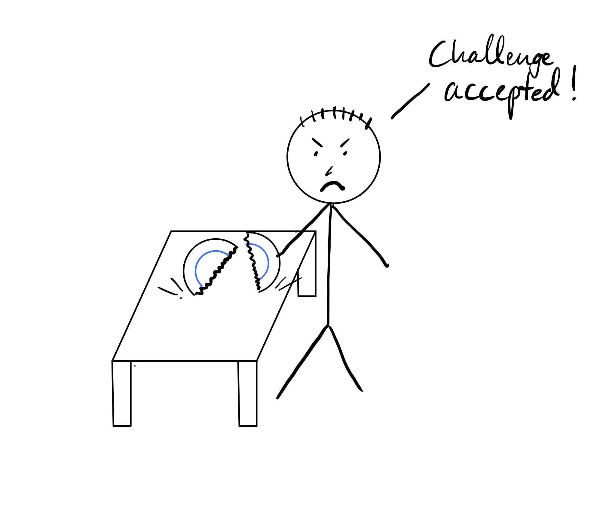

Consider the following two scenarios:
Derek was over for dinner at Lisa's house. After dinner, he offered to do the dishes, but as he was picking up one of the plates his grip slipped and he dropped it. Later, when telling her friend about the night, Lisa said, "Derek broke the plate."
Derek was over for dinner at Lisa's house. Lisa claimed that she bought special "unbreakable" plates and challenged Derek to break one. He promptly smacked the plate against the edge of the counter, and broke it. Later, when telling her friend about the night, Lisa said, "Derek broke the plate."
| 1 | 2 |
|---|---|
|
 |
Both times, the statement "Derek broke the plate" remains unchanged. But based on the different scenarios, we as readers draw very different conclusions. Evidence suggests that even toddlers are able to draw inferences about intentionality and volition (Vaish, Carpenter, and Tomasello 2010).1 Inferences like that in (2), Derek meant to break the plate, while in (1) it was an accident. Furthermore, different scenarios might evoke different levels of volition; we could easily imagine a range of set-ups where Derek is more or less volitional, between the two extremes laid out above. We can also draw a much broader range of inferences from these sentences; for example, we know that Derek is sentient while the plate is not, and that the plate physically changed during the process, but Derek probably wasn't. We know that the plate probably doesn't exist anymore, but Derek does. The list goes on...
This raises a few key questions: how is it that identical sentences can evoke a range of different inferences? What kinds of inferences do we draw from language? What other hidden knowledge is lying just under the surface of the language we speak?
A rich array of work has looked at these questions, including Dowty (1991), who introduced a number of inferences, including "volition", "awareness", "sentience", "change of state", and "existed before/during/after". From there, D. Reisinger et al. (2015), White et al. (2016), Govindarajan, Van Durme, and White (2019), and Vashishtha, Van Durme, and White (2019) annotated a corpus of English sentences these properties (among others) and began modeling them. I myself joined this effort fairly late, contributing to White et al. (2019), which consolidated annotations from across these works into one dataset, the Universal Decompositional Semantics Dataset, or UDSv1.0. My main contribution to this line of work has been working on a parsing model, which learns to automatically extract these inferences from text (Stengel-Eskin et al. 2020).
By way of starting, I'll try to summarize the different types of annotations in the dataset. The dataset gives each property a score from -3 to 3, with 3 being "very likely" and -3 being "very unlikely." The words the annotation applies to are given in bold.
| Annotation | Description | Examples |
|---|---|---|
| Factuality | Factuality inferences represent how likely (or unlikely) a listener thinks a scenario that is to have occurred. | Jo left (3), Jo didn’t leave (-3), Jo thought that Cole had left (-1) |
| Genericity | Genericity refers to inferences about the generality of events or event participants | Ex. property: genericity-predicate-particular: Amy ate oats for breakfast today (3), Amy ate oats for breakfast every day (-3) |
| Time | Temporal inferences are inferences about how long events might take | Ex. property: time-duration-minutes: Tom left (-3), Tom was singing (3) |
| Word Sense | Words can have different senses/supersenses (e.g. bank as a place to keep money (phyiscal location) vs. the bank of a river, (geographical feature)). These sense can apply to differing degrees. | Ex. property: "person" supersense Sandy led Rufus by a leash (-3), Sandy led Rufus by a leash (3) |
| Semantic proto-roles | SPR properties (introduced by Dowty (1991)) capture properties typically associated with either agents (the person/thing doing the acting in a sitation) and patients (the person/thing that's being acted upon), like awareness and volition (agent properties) or change of state and being created/destroyed (patient properties) | Ex. property: volition Derek broke his arm (-3), Derek broke the wishbone (3) Ex. property: was used The fragile vase was shipped with bubble-wrap (3), The fragile vase was shipped with haste (-3) |
When we look at these questions from one linguistic lens alone, we get an impoverished view. Some inferences will present themselves readily, while others will be purely contextual. For example from the English point of view, information on when an event happened is often presented explicitly in the tense of the verb; in another language (such as Mandarin) this information might need to be inferred from context, much like how Derek's level volition in breaking the plate in English needs to be inferred.
Other languages offer different lenses through which to view these semantic inferences by varying what they make explicit and what is kept below the surface. Think of semantics as a lost city or desert ruin, with different languages acting as different winds, shifting the surface-level sand to uncover different aspects of the same semantic structure.
Let's revisit Derek, but this time in a different linguistic setting -- say, Mexico City. Where in English, we'd use the same construction in both scenarios (volitional and non-volitional), in Spanish, we'd probably use a different construction. In scenarios (1) and (2), we'd say something like
| Spanish | Se | le | rompió | el plato | a | Derek |
|---|---|---|---|---|---|---|
| Direct English gloss | Itself | to him | broke | the plate | to | Derek |
| Rough English gloss | The | plate | broke | itself | to | Derek |
| English translation | Derek | broke | the plate |
| Spanish | Derek | rompió | el plato |
|---|---|---|---|
| En. gloss | Derek | broke | the plate |
| En. translation | Derek | broke | the plate |
Both can translate to "Derek broke the plate" in English, but the first utterance indicates that it was an accident. A direct gloss of each sentence is immediately below the example. Funnily enough, the direct gloss here looks a lot like what we might find in German!
| German | Der | Teller | ist | dem | Derek | zerbrochen |
|---|---|---|---|---|---|---|
| En. gloss | The-NOM | plate-NOM | is-AUX | the-DAT | Derek-DAT | broken |
| Rough En. gloss | The | plate | broke | to | Derek | |
| En. translation | Derek | broke | the | plate |
| Derek | hat | den | Teller | zerbrochen. |
|---|---|---|---|---|
| Derek | has | the-ACC | plate-ACC | broken |
| Derek | broke | the | plate | 2 |
So looking at two other languages tells us that while English doesn't necessarily make the distinction between volitional and non-volitional plate breaking (at least in the active voice), other languages do!3
Tired of Derek and his plates? Me too. Why not take a step up the linguistic family tree from Spanish and look at its parent, Latin. Latin is a fantastic language for exploring these kinds of inferences for a few reasons. The first is that its a morphologically rich language -- many of the grammatical relations which are encoded by word position in other languages (e.g. subject, predicate, and object in English) are encoded directly on the words. This means that word order is much less important. It also means that wealth of semantic information is encoded in the morphology of a word.
Another reason Latin is great for looking at these inferences is the way it's taught. Nouns (and their corresponding adjectives) have cases in Latin, which are different endings to the same stem (much like how verbs in English have different endings for different tenses/moods/persons). The cases are nominative, genitive, dative, accusative, ablative, and vocative (and sometimes locative), all with different uses. To help students remember which cases are used when, the cases come with handy names that are taught in textbooks, like "the ablative of agent" or "the dative of reference." We can match some of these handy mnemonics directly to certain inferences described in Dowty (1991). For example, the "was used" property fits well with the ablative of instrument, where an ablative ending tells us something was used as a tool in an action, i.e.
| Caesar | gladiis | occidus | est |
|---|---|---|---|
| Caesar-NOM | swords-ABL | killed-NOM | is-AUX |
| Caesar | with swords | killed | was |
| Caesare | was | killed | with swords |
Similarly, Dowty's "was for the benefit of" property demands nothing less than the dative, in this case often known as the dative of advantage/disadvantage. Cui bono is a famous example of this.4
These mnemonic devices not only help students learn Latin, but also help to expose some of the underlying semantic features of the language.
Genericity inferences pertain to how particular or abstract a predicate or argument is. For example, it's clear that "dogs" in "My uncle Roger's dogs Fifi and Fido" is different from "dogs" in "my brother is afraid of dogs", in that the first "dogs" is very particular, while the second one applies to more of a natural kind. Similarly, predicates can be more or less particular or general. Consider:
The "ate" in (3) is different from the "ate" in (4), which encompases a broader range of instances of an "eating" event. French makes this distinction quite clear on the surface level:
| Marie | a | mangé | du | gruau | pour | son | petit | déjeuner | hier |
|---|---|---|---|---|---|---|---|---|---|
| Marie | has | eaten | of the | oatmeal | for | her | small | lunch | yesterday |
| Marie | ate | oatmeal | for | breakfast | yesteray |
| Marie | mangeait | du | gruau | pour | son | petit | déjeuner | tous | les | jours |
|---|---|---|---|---|---|---|---|---|---|---|
| Marie | ate-PROG | of the | oatmeal | for | her | small | lunch | all | the | days |
| Marie | ate (imperf.) | oatmeal | for | breakfast | every | day |
Here, we have two different tenses for actions in the past which were repeated or more general, and those which are more specific instances. These same tenses (imperfect and perfect) relate also to time duration annotations, which can be found in the UDS dataset (White et al. 2019).
Awareness and sentience are probably my favorite proto-roles; what could better describe the impressive human capacity for language than the entirely unconscious ability to rapidly draw inferences about philosophically layered concepts like awareness and sentience? German (another morphologically rich language) makes certain inferences about awareness and sentience quite clear in its use of case with certain verbs. In English, a speaker surprised by something might say:
While an incredulous person might say:
where the "it" in (5) is clearly non-sentient (i.e. a news story, a state of affairs, a juicy piece of gossip, etc.) while "him" in (6) is sentient. In German, these two objects, while arguments of the same verb, take different cases (accusative and dative, respectively):
| Ich | glaube | es | nicht! |
|---|---|---|---|
| I | believe | it-ACC | not |
| I | don't | believe | it |
| Ich | glaube | ihm | nicht! |
|---|---|---|---|
| I | believe | him-DAT | not |
| I | don't | believe | him |
A German speaker thus explicitly represents beliefs about the sentience/non-sentience of an object while choosing a case for an object.
By no means am I suggesting, with the examples above, that these inferences are impossible to draw in different languages, or even necessarily more difficult. All languages are infinitely expressive, and given enough clarification, any inferences about proto-roles, genericity, time duration, or word sense can be made as plain as in any other language. I instead hope to draw attention to the ways that languages encode some of these inferences explicitly in the grammar, lending support to their status as real linguistic concepts rather than figments of the imagination.
Nor do I want to give the impression that speakers of these different languages differ in their judgements of these inferences, or that having the inferences explicitly represented in the grammar or morphology somehow increases our awareness of them. I don't know of any research to this effect, and have not experienced this myself. In fact, the miracle is that all of this happens largely unconsciously, and that there seems to be wide agreement between speakers on these inferences. That all speakers of a language can even agree on a meaning for what is said is miraculous, but that they can also to a large extent on what is not said is even more astounding.
Finally, these are just some examples from some languages that I happen to be familiar with. I'd love to find more examples like these, so if you can think of ones in other languages (especially non-WEIRD languages!) please don't hesitate to reach out! Similarly, if you can think of counter-examples in these languages or others, shoot me a message.
Dowty, David. 1991. “Thematic Proto-Roles and Argument Selection.” Language 67 (3). Linguistic Society of America: 547–619.
Govindarajan, Venkata, Benjamin Van Durme, and Aaron Steven White. 2019. “Decomposing Generalization: Models of Generic, Habitual, and Episodic Statements.” Transactions of the Association for Computational Linguistics 7: 501–17.
Reisinger, Drew, Rachel Rudinger, Francis Ferraro, Craig Harman, Kyle Rawlins, and Benjamin Van Durme. 2015. “Semantic Proto-Roles.” Transactions of the Association for Computational Linguistics 3: 475–88.
Stengel-Eskin, Elias, Aaron Steven White, Sheng Zhang, and Benjamin Van Durme. 2020. “Universal Decompositional Semantic Parsing.” In Proceedings of the 58th Annual Meeting of the Association for Computational Linguistics, 8427–39. Online: Association for Computational Linguistics. https://www.aclweb.org/anthology/2020.acl-main.746.
Vaish, Amrisha, Malinda Carpenter, and Michael Tomasello. 2010. “Young Children Selectively Avoid Helping People with Harmful Intentions.” Child Development 81 (6). Wiley Online Library: 1661–9.
Vashishtha, Siddharth, Benjamin Van Durme, and Aaron Steven White. 2019. “Fine-Grained Temporal Relation Extraction.” In Proceedings of the 57th Annual Meeting of the Association for Computational Linguistics, 2906–19. Florence, Italy: Association for Computational Linguistics.
White, Aaron Steven, Drew Reisinger, Keisuke Sakaguchi, Tim Vieira, Sheng Zhang, Rachel Rudinger, Kyle Rawlins, and Benjamin Van Durme. 2016. “Universal Decompositional Semantics on Universal Dependencies.” In Proceedings of the 2016 Conference on Empirical Methods in Natural Language Processing, 1713–23. Austin, TX: Association for Computational Linguistics.
White, Aaron Steven, Elias Stengel-Eskin, Siddharth Vashishtha, Venkata Govindarajan, Dee Ann Reisinger, Tim Vieira, Keisuke Sakaguchi, et al. 2019. “The Universal Decompositional Semantics Dataset and Decomp Toolkit.” ArXiv Preprint ArXiv:1909.13851.
based on the finding that toddlers show preferences for helping individuals who are perceived to have caused a harmful action accidentally over those who caused the same action on purpose↩
Where needed, I've included a linguistic gloss (basically a word-for-word translation), with cases like NOM (nominative), ACC (accusative), DAT (dative), etc., as well as a "rough gloss" which gives a more English-ified word-for-word translation of the original sentence, to be more comprehensible for those who aren't familiar with the case system.↩
I specify the active voice, since we often use the passive voice to indicate a lack of volition, i.e. "The plate was broken by Derek," although this isn't quite the same as the Spanish and German examples. We also have verbs that optionally take an object, like "break," that can be used to express a similar notion, i.e. "The plate broke," but there is no easy way to simultaneously express Derek's involvement.↩
cui bono is actually a rare "double dative" composed of a dative of advantage and a dative of reference, literally, "for a benefit to whom?"↩